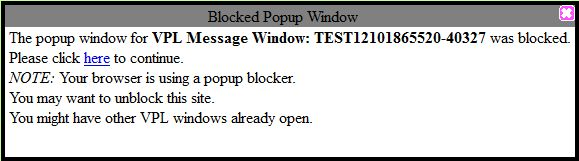

- In Firefox, go to the BioBIKE portal and select either ViroBIKE or PhAnToMe/BioBIKE. It is important to go to one of these instances, as the others don't have the
sequence of phage T4 necessary to run the simulation.
- Enter into the login box your BioBIKE login ID, if you have
one, or if you don't, enter any nickname you want to use (e.g. your
name). Make sure the nickname has no blanks or special characters (just
letters and numbers). Click New Login.
- If you are taken to a registration screen, fill in the boxes and register, if you like, or just click No Registration.
- Bring in the special functions for this simulation by mousing
over the green INPUT-OUTPUT button at the top of the screen and
clicking RUN-FILE.
- Then mouse over the green arrow Options icon and click SHARED.
- Finally, click file-name to open the entry box and type "crick-1961-simulation.bike". Press the Enter key on your keyboard after you've finished typing, and double-click RUN-FILE in the yellow function box.
- The first time you use BioBIKE, you'll probably get a popup warning. Click the Options button and allow popups, then click the here link on the BioBIKE warning to continue.
|
Screenshot for Item 4
Screenshot for Item 5
Screenshot for Item 6
Screenshots for Item 7

|